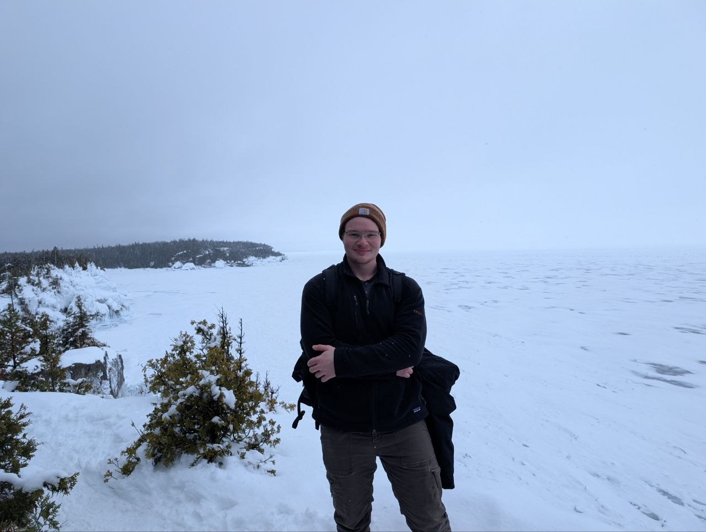

Hi, I'm Jaiden.
Currently, I'm a 1st-year engineering graduate student at Waterloo with a mathematics+physics undergrad. I'm interested in applying methods from mathematics and theoretical physics to problems in engineering, partly inspired by the work of Robert Hermann.
The majority of my mathematical activity occurs independently; I have studied differential geometry, algebraic topology, classical mechanics/field theory, representation theory, quantum mechanics, etc.
I'm interested in using differential geometry, algebraic topology, and algebraic geometry to develop methods and theories in engineering. I'm currently working in systems and control theory on control and symmetry analysis of mechanical systems. Recently, I have also become interested in computational differential geometry and developing methods to study numerical Lie symmetries.